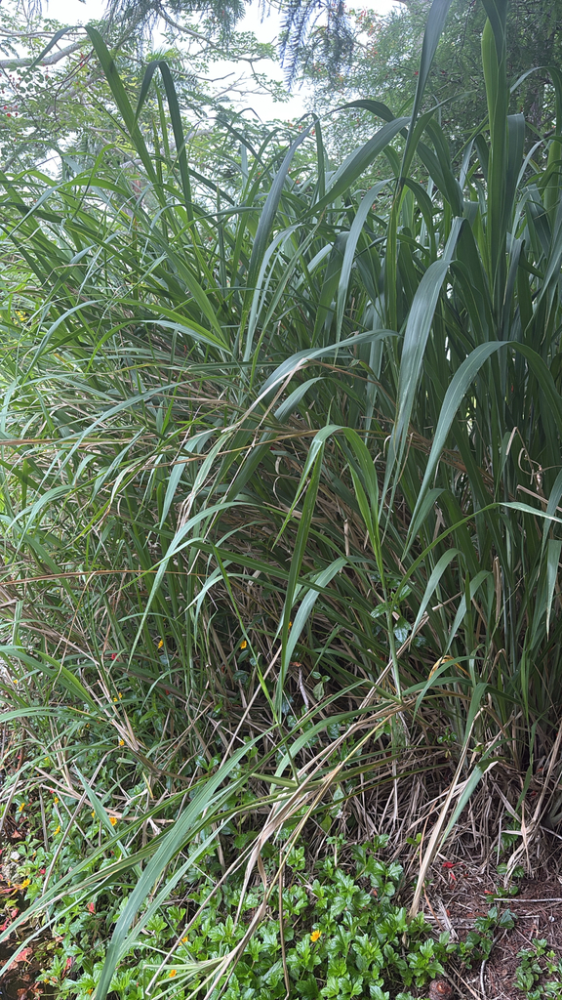

Native throughout Florida and the eastern United States, west to Kansas and south to northern South America. Found in moist to wet habitats — wet prairies, pond edges, stream banks, roadside ditches, and low woods. One of Florida's most widespread native grasses.
Fakahatchee Grass is a valuable native grass for pond edges and wet margins at Palma Sola. The large seeds produced in late summer and fall are eaten by a range of birds and small mammals. The dense clumping form — with stems often bare in the center and arching outward — provides excellent ground-level cover and nesting structure for ground-feeding birds and small animals. The leaves are highly palatable to deer. The fibrous root mass stabilizes wet soil effectively and supports the soil invertebrate community. Several skipper butterfly species use native grasses in this genus as larval hosts.
Warm-season perennial spreading by short, jointed rhizomes — forms clumps that are often bare in the center with stems arching outward.
Stout terminal and lateral spikes appearing from late spring through fall — white, pink, yellow, or rust colored. Male flowers (pollen-bearing) are borne in the upper portion of the spike; female flowers (seed-bearing) in the lower portion, maturing from top to bottom.
Relatively large, enclosed in a hard cupule — matures unevenly from top of spike downward. Seed yield is naturally low and seeds don't reseed readily from established stands.
The defining identification feature — a cylindrical spike with distinct stacked segments that look remarkably like a tiny primitive corn ear.
3 to 6 feet long, flat and broad for a grass, dark green, slightly coarse to the touch.
The large, arching clump with stems spreading outward from a bare center is distinctive. The cylindrical seed spikes rising above the foliage in summer and fall are the best identification feature — look for the corn-ear resemblance. The leaves are noticeably broader and coarser than most ornamental grasses.
NOMENCLATURE / RELATIONSHIP: Tripsacum belongs to the subtribe Tripsacinae alongside Zea (corn) and its wild ancestor teosinte; the genera can hybridize. Tripsacum is a very close relative of corn, not its direct ancestor.
Edible. Not commonly eaten. Seeds eaten by wildlife. Historical records suggest seeds were used as food by Indigenous peoples — possibly popped. Seed protein content is notably high (over 27%).